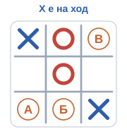

Глава IV · Отвъд игрите
Финална викторина
Осем въпроса, по един наведнъж. Накрая ще видиш резултата и кои отговори са верни и кои грешни.
Каква е разликата между правила и стратегия?
Да. Правилата са входният билет, стратегията избира добрите ходове.
Не. Който знае само правилата, знае какво може, но не и какво е добре.
Не. Стратегията избира кой от позволените ходове е добър.
Защо Deep Blue е бил толкова силен?
Не. Deep Blue не се учи от собствените си партии — това прави по-късно AlphaZero.
Да. Около 200 милиона позиции в секунда плюс човешко знание, вложено в оценката.
Не. Партиите в шаха са толкова много, че никой компютър не може да ги провери.
X е на ход. Кой от означените ходове избира минимакс?

Красиво, но O завършва средната колона и печели веднага.
Да. Минимакс оценява всеки ход по най-силния отговор. Само този ход спира O, а оттам при перфектна игра е равенство.
Заплахата идва късно: O завършва средната колона и печели.
Ученик обучава модел да разпознава породи кучета. Проверява го със същите снимки, с които го е обучил, и получава 100%. Какво показва това?
Да. Тренировъчните примери учат, тестовите проверяват.
Не непременно. Отличен резултат върху вече видени снимки може да значи само, че моделът ги помни.
Не. Резултатът може да е верен — просто не доказва, че моделът се справя с нови снимки.
Чатбот получава награда всеки път, когато потребителят натисне „харесва ми“. Какво рискува да научи?
Не винаги. Хората понякога харесват приятното повече от вярното.
Не. Машината гони наградата, не целта ни — а и хората могат да наградят грешното нещо.
Да. Харесването не е същото като истината, затова модел, награждаван само за харесвания, може да се научи да ласкае.
Какво прави MCTS?
Да. MCTS балансира между използване на наученото и проучване на непознатото.
Не. В Го това е невъзможно — затова MCTS избира къде да провери.
Не. Така може да изпусне по-добър ход, за който още знае малко.
Как AlphaZero се учи без човешки партии?
Не. Правилата дават само старта, не стратегията.
Да. Стратегията идва от опита: игра срещу себе си, търсене и обучение.
Не. AlphaZero не вижда нито една човешка партия.
ChatGPT ти дава уверен отговор с дата. Какво правиш?
Не. Моделът предсказва вероятен текст, а не проверен факт.
Не. Увереността на модела не е доказателство.
Да. Фактите се проверяват в надеждни източници.